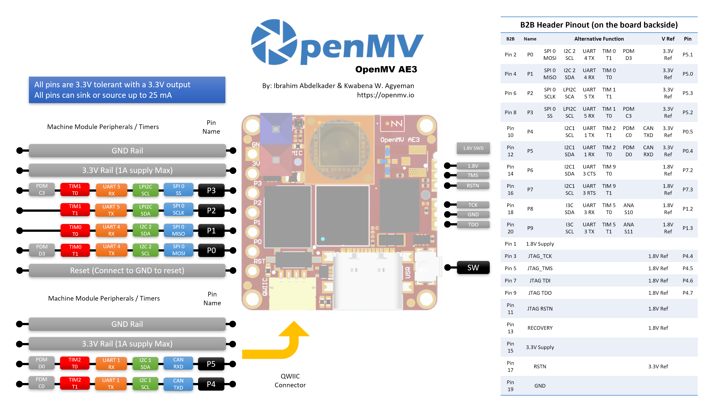

OpenMV AE3¶
La OpenMV AE3 está construida en torno al Alif Ensemble E3, un SoC con doble ARM Cortex‑M55 (núcleo HP de 400 MHz + núcleo HE de 160 MHz) con dos NPU integradas (NPU HP de 400 MHz / 204 GOPS + NPU HE de 160 MHz / 46 GOPS). La placa combina las NPU con el sensor PAG7936 de 1 MP de obturador global, USB‑C de alta velocidad, Wi‑Fi, Bluetooth 5.1, una IMU LSM6DSM, un micrófono y un telémetro de tiempo de vuelo VL53L8CX de 8×8, todo en una placa de 30 × 30 mm.

Para la hoja de datos completa, fotos y dimensiones, consulta la página de producto de la OpenMV AE3.
Aspectos destacados¶
Alif Ensemble E3 — doble ARM Cortex‑M55 con SIMD Helium de 128 bits, núcleo HP de 400 MHz + núcleo HE de 160 MHz (~640 / ~256 DMIPS, CoreMark 1748 / 752).
NPU duales: NPU HP de 400 MHz / 204 GOPS + NPU HE de 160 MHz / 46 GOPS para IA/ML — ejecuta detección de objetos YOLO junto con otras cargas de trabajo.
GPU 2D por hardware para escalado.
13,5 MB de SRAM interna más 5,5 MB de MRAM integrada y 32 MB de memoria flash octal externa (DDR de 8 bits a 100 MHz, lectura a 200 MB/s).
4 KB de RAM de respaldo con el RTC integrado.
Sensor PAG7936 de obturador global a color de 1 MP.
IMU integrada (acelerómetro + giroscopio LSM6DSM), micrófono y sensor de tiempo de vuelo VL53L8CX de 8×8 (hasta 4 m).
USB‑C de alta velocidad (480 Mb/s) con filtrado EMI y protección TVS, Wi‑Fi a/b/g/n + Bluetooth 5.1 (antena de chip u opción U.FL).
10 pines de E/S de usuario — P0–P3 en los conectores laterales, P4–P5 en el conector Qwiic y P6–P9 en el conector B2B en la parte trasera. Líneas adicionales de depuración y recuperación también se enrutan al conector B2B.
Todos los pines tienen salida a 3,3 V / tolerancia a 3,3 V, 25 mA por pin y capacidad de interrupción. Las entradas ADC están referenciadas a 1,8 V.
LED RGB de usuario, botón de usuario, interruptor de recuperación y conector Qwiic.
80 µA en suspensión profunda a 3,3 V (24 mA en reposo, 50–60 mA activa).
Advertencia
Los pines de E/S de la AE3 no toleran 5 V. No conectes el dispositivo directamente a un MCU de 5 V como el Arduino Mega; usa un conversor de nivel para cualquier señal de 5 V.
Diagrama de pines¶
{kind=link}

Referencia de pines¶
La AE3 expone 10 pines de usuario en los conectores laterales (P0–P9). Señales adicionales —incluyendo JTAG y la línea de recuperación— se enrutan a un conector B2B (placa a placa) en la parte trasera de la placa para shields y placas portadoras.
Nombre del pin |
Referencia |
Función |
|---|---|---|
P0 |
3,3 V |
SPI0 MOSI / I2C2 SCL / UART4 TX / TIM0 T1 / PDM D3 |
P1 |
3,3 V |
SPI0 MISO / I2C2 SDA / UART4 RX / TIM0 T0 |
P2 |
3,3 V |
SPI0 SCLK / LPI2C SDA / UART5 TX / TIM1 T1 |
P3 |
3,3 V |
SPI0 SS / LPI2C SCL / UART5 RX / TIM1 T0 / PDM C3 |
P4 |
3,3 V |
I2C1 SCL / UART1 TX / TIM2 T1 / PDM C0 / CAN TX |
P5 |
3,3 V |
I2C1 SDA / UART1 RX / TIM2 T0 / PDM D0 / CAN RX |
P6 |
1,8 V |
I2C1 SDA / UART3 CTS / TIM9 T0 (solo B2B) |
P7 |
1,8 V |
I2C1 SCL / UART3 RTS / TIM9 T1 (solo B2B) |
P8 |
1,8 V |
I3C SDA / UART3 RX / TIM5 T0 / ADC ch S10 (solo B2B) |
P9 |
1,8 V |
I3C SCL / UART3 TX / TIM5 T1 / ADC ch S11 (solo B2B) |
P10 |
1,8 V |
GPIO / JTAG TCK (solo B2B) |
P11 |
1,8 V |
GPIO / JTAG TDO (solo B2B) |
P13 |
1,8 V |
GPIO / JTAG TMS (solo B2B) |
P14 |
1,8 V |
GPIO / JTAG TDI (solo B2B) |
RESET |
3,3 V |
conecta a GND para reiniciar la placa |
SW |
3,3 V |
botón de usuario (activo en bajo) |
LED_RED |
3,3 V |
canal rojo del LED RGB (activo en bajo) |
LED_GREEN |
3,3 V |
canal verde del LED RGB (activo en bajo) |
LED_BLUE |
3,3 V |
canal azul del LED RGB (activo en bajo) |
Nota
P0–P5 están en los conectores laterales (referenciados a 3,3 V); P6–P9 se exponen únicamente en el conector B2B de la parte trasera de la placa y están referenciados a 1,8 V. Aplicar 3,3 V a un pin referenciado a 1,8 V dañará el SoC — asegúrate de que cualquier señal conectada al conector B2B esté a 1,8 V.
Pines de alimentación¶
3.3V — el riel de alimentación principal de la AE3. El mismo riel de 3,3 V se expone en las almohadillas de soldadura del conector GPIO, el conector Qwiic y el conector B2B en la parte trasera de la placa.
1.8V — se expone en el conector B2B como salida únicamente. Úsalo para alimentar periféricos con lógica de 1,8 V en una placa portadora B2B; no lo alimentes desde fuera de la placa.
GND — tierra común.
La AE3 no tiene pin VIN ni cargador LiPo. Puede alimentarse a través de cualquiera de tres vías:
USB‑C — el regulador integrado reduce los 5 V del USB a 3,3 V y los inyecta en el riel de 3,3 V.
Conector Qwiic — alimenta una fuente regulada de 3,3 V en el conector Qwiic para alimentar la placa desde un módulo Qwiic.
Conector GPIO / almohadillas de 3,3 V del B2B — alimenta una fuente regulada de 3,3 V en cualquiera de las almohadillas de 3,3 V del conector de E/S o del conector B2B.
El regulador USB alimenta el riel a través de un diodo ideal, de modo que las fuentes externas de 3,3 V en el lado Qwiic / GPIO / B2B pueden alimentar la placa incluso mientras el USB sigue conectado sin retroalimentar el regulador USB.
Truco
Usa el estimador de duración de batería para modelar cuánto tiempo funcionará la AE3 con una batería para un ciclo de trabajo activo / suspensión profunda determinado.
Pines de recuperación y depuración¶
RESET — conecta a GND para reiniciar la placa. Al soltarlo, el SoC arranca normalmente.
Hay un interruptor de recuperación en la cara frontal (del lado de la cámara) de la placa, en la esquina inferior izquierda. Cuando se activa, fuerza la salida del UART SE de la AE3 a través de USB para que OpenMV IDE pueda reescribir el bootloader integrado. El mismo modo de recuperación puede activarse de forma remota poniendo en bajo el pin RECOVERY del conector B2B.
La AE3 admite depuración tanto por SWD como por JTAG completo:
El conector SWD de 1,8 V en el lateral de la placa es para un cable Tag-Connect ECV3-06-CTX y expone las cuatro señales SWD (TCK / TMS / TDO / RSTN) más GND.
El conector B2B de la parte trasera de la placa expone los mismos pines de depuración (P10 = TCK, P11 = TDO, P13 = TMS, P14 = TDI) más el RSTN del sistema y un JTAG RSTN independiente. Estos pines pueden usarse tanto para SWD (TCK + TMS) como para JTAG completo; la línea JTAG RSTN solo se necesita en modo JTAG completo.
Todas las señales de depuración están referenciadas a 1,8 V — asegúrate de que tu adaptador de depuración esté configurado para lógica de 1,8 V antes de conectarlo.
Periféricos integrados¶
LEDs¶
La AE3 tiene un único LED RGB de usuario, controlable por software a través de machine.LED:
from machine import LED
LED("LED_RED").on()
LED("LED_GREEN").on()
LED("LED_BLUE").on()
Sensor de cámara¶
El PAG7936 se controla a través del módulo csi — sensores de cámara:
import csi
cam = csi.CSI()
cam.reset()
cam.pixformat(csi.RGB565)
cam.framesize(csi.HD) # 1280×800
cam.snapshot(time=2000) # let auto‑exposure settle
while True:
img = cam.snapshot()
El PAG7936 admite el modo disparado — la integración de píxeles se alinea exactamente con cada llamada a csi.CSI.snapshot en lugar de con el reloj de fotogramas de funcionamiento libre, lo que resulta útil para sincronizar la captura con un evento externo u otro sensor. Actívalo a través de csi.CSI.ioctl con csi.IOCTL_SET_TRIGGERED_MODE. La tasa de fotogramas cae a aproximadamente la mitad del modo de funcionamiento libre porque la lectura ya no se solapa con la integración del siguiente fotograma:
cam.ioctl(csi.IOCTL_SET_TRIGGERED_MODE, True)
NPU¶
Las dos NPU integradas de la AE3 (NPU HP de 400 MHz / 204 GOPS + NPU HE de 160 MHz / 46 GOPS) se exponen a través del módulo ml — Aprendizaje automático. Los modelos almacenados en el sistema de archivos de solo lectura /rom se cargan directamente desde la memoria flash sin copiarse a la RAM, de modo que incluso los detectores grandes caben cómodamente junto al framebuffer en vivo. Ejecuta un detector YOLOv8 en cada fotograma y dibuja las predicciones sobre la imagen en vivo:
import csi
import time
import ml
from ml.postprocessing.ultralytics import YoloV8
# Initialize the sensor.
csi0 = csi.CSI()
csi0.reset()
csi0.pixformat(csi.RGB565)
csi0.framesize(csi.VGA)
# Load YOLO V8 model from ROM FS.
model = ml.Model("/rom/yolov8n_192.tflite", postprocess=YoloV8(threshold=0.4))
print(model)
# Visualization parameters.
n = len(model.labels)
model_class_colors = [
(int(255 * i // n), int(255 * (n - i - 1) // n), 255)
for i in range(n)
]
clock = time.clock()
while True:
clock.tick()
img = csi0.snapshot()
# boxes is a list of list per class of ((x, y, w, h), score) tuples
boxes = model.predict([img])
# Draw bounding boxes around the detected objects
for i, class_detections in enumerate(boxes):
rects = [r for r, score in class_detections]
labels = [model.labels[i] for j in range(len(rects))]
colors = [model_class_colors[i] for j in range(len(rects))]
ml.utils.draw_predictions(img, rects, labels, colors, format=None)
print(clock.fps(), "fps")
Núcleo HE¶
La AE3 integra dos núcleos Cortex‑M55 en un MCU: el núcleo de alto rendimiento (HP) que ejecuta la instancia principal de MicroPython, la cámara, la NPU HP, el USB, etc.; y el núcleo de alta eficiencia (HE) que opera a una potencia mucho menor y arranca en su propia instancia pequeña de MicroPython. Ambos núcleos comparten un bus de mensajes Open-AMP / RPMsg, de modo que el núcleo HP puede despachar funciones de Python al núcleo HE, recibir los resultados y mantener las dos mitades desacopladas.
El punto de entrada más sencillo es el decorador @openamp.async_remote. Serializa una función de Python, la envía al núcleo HE, y el núcleo HE la ejecuta como una tarea asyncio. Después de registrar las tareas, instancia openamp.RemoteProc con la dirección flash del firmware HE y llama a rproc.start() para arrancar el segundo núcleo. Sin una función de retorno (callback), la salida de print() de la función decorada se reenvía a través del endpoint predeterminado a la stdout del núcleo HP — útil para un «hola mundo»:
import time
import openamp
@openamp.async_remote
async def task1(ept):
import asyncio
while True:
print("Hello from the HE core!")
await asyncio.sleep(1)
# Boot the HE core. This runs the registered tasks.
rproc = openamp.RemoteProc(0x80320000)
rproc.start()
while True:
print("Hello from the HP core!")
time.sleep(1)
Para mensajería bidireccional, pasa una función de retorno (callback) al decorador. La función de retorno se ejecuta en el núcleo HP cada vez que la tarea HE llama a ept.send():
import time
import openamp
def task_callback(src_addr, data):
print("HP received:", data.decode())
@openamp.async_remote(task_callback)
async def task1(ept):
import asyncio
count = 0
while True:
ept.send(f"count = {count}")
count += 1
await asyncio.sleep(1)
rproc = openamp.RemoteProc(0x80320000)
rproc.start()
while True:
time.sleep(1)
El núcleo HE tiene su propia NPU HE (160 MHz, 46 GOPS), de modo que puede ejecutar un segundo modelo de ML en paralelo con lo que sea que esté ocupando la NPU HP del núcleo HP. Una división útil es poner un pequeño modelo de disparo / clasificador siempre activo en el lado HE y dejar que el núcleo HP reaccione solo cuando se marca algo interesante — la detección de palabras clave desde el micrófono integrado encaja bien porque es continua, de bajo ancho de banda, y el núcleo HE se mantiene a una potencia mucho menor que el HP. El asistente congelado ml.apps.MicroSpeech reconoce «Yes» y «No» de fábrica — di las palabras alta y claramente al micrófono integrado para activar la detección:
import time
import openamp
def task_callback(src_addr, data):
print("Heard:", data.decode())
@openamp.async_remote(task_callback)
async def task1(ept):
from ml.apps import MicroSpeech
speech = MicroSpeech(gain_db=24)
while True:
label, scores = speech.listen(timeout=0, threshold=0.70)
if label:
ept.send(label)
rproc = openamp.RemoteProc(0x80320000)
rproc.start()
while True:
time.sleep(1)
Para una división más rica, ejecuta BlazeFace en la NPU HP mientras el núcleo HE maneja la detección de palabras clave en segundo plano — el bucle HP superpone la palabra clave escuchada más reciente sobre el fotograma de la cámara:
import csi
import time
import openamp
import ml
from ml.postprocessing.mediapipe import BlazeFace
label = None
label_ticks = 0
LABEL_HOLD_MS = 2000
def task_callback(src_addr, data):
global label, label_ticks
label = data.decode()
label_ticks = time.ticks_ms()
@openamp.async_remote(task_callback)
async def task1(ept):
from ml.apps import MicroSpeech
speech = MicroSpeech(gain_db=24)
while True:
l, scores = speech.listen(timeout=0, threshold=0.70)
if l:
ept.send(l)
# Start the HE core before initializing the camera on the HP core.
rproc = openamp.RemoteProc(0x80320000)
rproc.start()
csi0 = csi.CSI()
csi0.reset()
csi0.pixformat(csi.RGB565)
csi0.framesize(csi.VGA)
csi0.window((400, 400))
model = ml.Model("/rom/blazeface_front_128.tflite",
postprocess=BlazeFace(threshold=0.4))
clock = time.clock()
while True:
clock.tick()
img = csi0.snapshot()
for r, score, keypoints in model.predict([img]):
ml.utils.draw_predictions(img, [r], ("face",),
((0, 0, 255),), format=None)
ml.utils.draw_keypoints(img, keypoints, color=(255, 0, 0))
if label is not None:
if time.ticks_diff(time.ticks_ms(), label_ticks) < LABEL_HOLD_MS:
img.draw_string((4, 4), f"Heard: {label}",
color=(255, 0, 0), scale=2)
else:
label = None
print(clock.fps(), "fps")
El núcleo HE es muy adecuado para cargas de trabajo siempre activas o de baja frecuencia que no quieres que compitan con la canalización de cámara/NPU del lado HP — inferencia de ML pequeña, DSP ligero sobre datos del micrófono o la IMU, y trabajos en segundo plano similares.
Algunas limitaciones a tener en cuenta:
Limítate al micrófono y la IMU al controlar periféricos desde el núcleo HE — esos son para los que está diseñado el lado HE. Cada periférico solo puede pertenecer a un núcleo a la vez, así que elige HP o HE para él y mantén esa elección durante toda la vida del script.
El cuerpo de cada tarea
@openamp.async_remotedebe serializarse a menos de 500 bytes de bytecode mpy — mantén la función pequeña y factoriza la lógica más pesada en módulos de biblioteca separados que se congelen en el firmware.Las importaciones dentro de la función despachada solo ven los módulos que existen en el sistema de archivos del núcleo HE. El núcleo HE tiene su propio ROMFS
/rom—separado del/romdel núcleo HP— de modo que los módulos y modelos de ML que quieras tener disponibles en HE deben integrarse en la imagen ROMFS del lado HE, no en la del HP.
Micrófono¶
El micrófono integrado se captura a través de audio — Módulo de audio. Cada búfer llega como un bytearray PCM con signo de 16 bits, lo que hace trivial alimentarlo en ulab/numpy para un DSP rápido. Un detector de volumen sencillo — imprime cada vez que el volumen RMS supera un umbral:
import audio
from ulab import numpy as np
def loudness(pcmbuf):
samples = np.array(np.frombuffer(pcmbuf, dtype=np.int16), dtype=np.float)
rms = np.sqrt(np.mean(samples ** 2))
if rms > 10000:
print("Loud!", int(rms))
audio.init(channels=1, frequency=16000, gain_db=24)
audio.start_streaming(loudness)
while True:
pass
IMU¶
El acelerómetro + giroscopio LSM6DSM integrado se expone a través de imu — sensor imu:
import imu
import time
while True:
print(imu.acceleration_mg()) # (x, y, z) in milli‑g
print(imu.angular_rate_mdps()) # (x, y, z) in milli‑deg/s
time.sleep_ms(100)
Sensor de tiempo de vuelo¶
La AE3 lleva un sensor de tiempo de vuelo multizona VL53L8CX de 8×8 que devuelve hasta 64 lecturas de distancia por fotograma, con un alcance máximo de ~4 m. Se expone a través del módulo tof — controlador de sensor de tiempo de vuelo — llama a tof.init() para iniciar el sensor y a tof.read_depth() para obtener un fotograma de profundidad como una lista plana de lecturas en milímetros (una por zona):
import tof
tof.init()
while True:
depth, depth_min, depth_max = tof.read_depth()
print("min:", depth_min, "mm max:", depth_max, "mm")
El arreglo de profundidad también puede dibujarse sobre un fotograma a color del sensor principal — tof.draw_depth() lo pinta sobre una image.Image existente, mientras que tof.snapshot() devuelve una imagen de profundidad recién renderizada:
import image
import tof
import csi
# Bring up the VL53L8CX time-of-flight sensor.
tof.init()
# Configure the main camera at VGA RGB565.
cam = csi.CSI()
cam.reset()
cam.pixformat(csi.RGB565)
cam.framesize(csi.VGA)
# Off-screen framebuffer used to compose the camera frame and the
# up-scaled depth heat-map side by side before pushing the result
# back to the live preview.
b = image.Image(640, 480, image.RGB565)
while True:
# Grab a colour frame from the main camera.
img = cam.snapshot()
try:
# Capture TOF data [depth map, min distance, max distance].
# vflip / hmirror align the ToF orientation with the camera.
depth, dmin, dmax = tof.read_depth(vflip=True, hmirror=True)
# Zones with no return read back as 0.0 — clamp them to the
# frame's max distance so the colour palette doesn't show
# them as "closest".
for i in range(0, len(depth)):
if depth[i] == 0.0:
depth[i] = dmax
except RuntimeError:
# The sensor occasionally faults on a frame; reset and skip.
tof.reset()
continue
# Draw the camera frame into the left half of the framebuffer,
# scaled to 60% so it leaves room for the depth heat-map on
# the right.
b.draw_image(img, x=0, y=64+8, x_scale=0.6, hint=image.BILINEAR)
# Up-sample the 8x8 depth array 30x with bicubic smoothing and
# blend it into the right half using the depth palette.
# scale=(0, 400) maps 0-400 mm to the full palette range.
tof.draw_depth(b, depth, x=320+64+16, y=64+8, alpha=255,
hint=image.BICUBIC, x_scale=30, y_scale=30,
scale=(0, 400), color_palette=image.PALETTE_DEPTH)
# Copy the composed framebuffer back into the live preview so
# OpenMV IDE shows both panels.
img.set(b)
Wi‑Fi¶
El CYW43439 integrado se expone a través de network — configuración de red como una interfaz de estación. Después de conectarse, ipconfig("addr4") devuelve el par (ip, netmask):
import network, time
wlan = network.WLAN(network.STA_IF)
wlan.active(True)
wlan.connect("ssid", "password")
while not wlan.isconnected():
time.sleep(1)
print("Wi‑Fi IP:", wlan.ipconfig("addr4")[0])
Bluetooth¶
El mismo CYW43439 también expone Bluetooth 5.1. Usa aioble — BLE asíncrono para BLE compatible con asyncio — por ejemplo, anunciarse como periférico y esperar a que un central se conecte:
import asyncio
import aioble
async def run():
while True:
conn = await aioble.advertise(250_000, name="OpenMV-AE3")
print("Connected:", conn.device)
await conn.disconnected()
asyncio.run(run())
Referencia de buses¶
GPIO¶
Usa machine.Pin para leer o controlar cualquiera de los pines serigrafiados. Las salidas son CMOS de 3,3 V y pueden absorber/suministrar hasta 25 mA por pin.
from machine import Pin
out = Pin("P0", Pin.OUT)
out.on()
out.off()
out.value(1)
inp = Pin("P1", Pin.IN, Pin.PULL_UP)
print(inp.value())
Cualquier pin de entrada también puede disparar una interrupción en las transiciones de flanco:
def handler(pin):
print("triggered:", pin)
Pin("P1", Pin.IN, Pin.PULL_UP).irq(
handler, Pin.IRQ_FALLING | Pin.IRQ_RISING,
)
UART¶
Bus |
TX |
RX |
RTS |
CTS |
|---|---|---|---|---|
UART1 |
P4 |
P5 |
— |
— |
UART3 |
P9 |
P8 |
P7 |
P6 |
UART4 |
P0 |
P1 |
— |
— |
UART5 |
P2 |
P3 |
— |
— |
from machine import UART
uart = UART(1, baudrate=115200)
uart.write("hello")
uart.read(5)
UART3 es el único bus con control de flujo por hardware. Como P6–P9 están en el conector B2B y están referenciados a 1,8 V, UART3 solo funciona a través de un conversor de nivel o una placa portadora B2B — no le conectes lógica de 3,3 V directamente.
I²C¶
Bus |
SCL |
SDA |
|---|---|---|
I2C1 |
P4 |
P5 |
I2C2 |
P0 |
P1 |
LPI2C |
P3 |
P2 |
from machine import I2C
i2c = I2C(1, freq=400_000)
i2c.scan()
i2c.writeto(0x76, b"hi")
El conector Qwiic integrado expone I2C2 a 3,3 V.
I2C1 e I2C2 también pueden usarse en modo destino (esclavo) a través de machine.I2CTarget para exponer una región de memoria a otro controlador I²C:
from machine import I2CTarget
buf = bytearray(32)
target = I2CTarget(1, addr=0x42, mem=buf)
Nota
El periférico LPI2C no está expuesto en el firmware. Si se expusiera, solo admitiría el modo destino (esclavo), e I2C1 e I2C2 ya cubren la operación tanto de controlador como de destino.
SPI¶
Bus |
MOSI |
MISO |
SCK |
CS |
|---|---|---|---|---|
SPI0 |
P0 |
P1 |
P2 |
P3 |
from machine import SPI
from machine import Pin
spi = SPI(0, baudrate=10_000_000)
cs = Pin("P3", Pin.OUT, value=1) # CS is not driven by the SPI peripheral
cs.value(0)
spi.write(b"hello")
cs.value(1)
ADC¶
El Alif Ensemble E3 expone dos canales ADC de 12 bits en P8 y P9 (solo conector B2B). Ambas entradas están referenciadas a 1,8 V — read_u16 devuelve 0–65535 en el rango de 0–1,8 V en el pin:
from machine import ADC
import time
adc = ADC("P8")
while True:
voltage = adc.read_u16() * 1.8 / 65535
print(voltage)
time.sleep_ms(100)
Advertencia
Las entradas ADC de la AE3 están referenciadas a 1,8 V, no a 3,3 V. Aplicar una señal de 3,3 V sin tratar saturará el convertidor y puede dañar el pin — reduce las tensiones más altas externamente con un divisor.
PWM¶
Pin |
Temporizador / canal |
|---|---|
P0 |
TIM0 T1 |
P1 |
TIM0 T0 |
P2 |
TIM1 T1 |
P3 |
TIM1 T0 |
P4 |
TIM2 T1 |
P5 |
TIM2 T0 |
P6 |
TIM9 T0 (solo B2B) |
P7 |
TIM9 T1 (solo B2B) |
P8 |
TIM5 T0 (solo B2B) |
P9 |
TIM5 T1 (solo B2B) |
Controla cualquiera de ellos a través de machine.PWM:
from machine import Pin, PWM
pwm = PWM(Pin("P0"), freq=1_000, duty_u16=32768)
Buses por software (bit‑banged)¶
machine.SoftI2C y machine.SoftSPI funcionan en cualquier GPIO si necesitas un bus adicional.
Sensor térmico (externo)¶
El firmware incluye el controlador fir — controlador de sensor térmico (fir == infrarrojo lejano) para un generador de imágenes térmicas AMG8833 de 8 × 8 cableado externamente. Conecta el módulo al bus I²C indicado abajo, luego lee fotogramas con fir.init() + fir.snapshot():
import time
import image
import fir
fir.init() # auto‑detects the sensor
clock = time.clock()
while True:
clock.tick()
try:
img = fir.snapshot(x_scale=5, y_scale=5,
color_palette=image.PALETTE_IRONBOW,
hint=image.BICUBIC,
copy_to_fb=True)
except OSError:
continue
print(clock.fps())
El controlador fir solo se comunica con el sensor a través de I²C 1 — cablea el módulo a P4 (SCL) y P5 (SDA).
Temporización¶
time¶
El módulo time cubre retardos bloqueantes, ticks monotónicos y medición de tiempo transcurrido:
import time
time.sleep(1) # seconds
time.sleep_ms(500)
time.sleep_us(10)
start = time.ticks_ms()
# ...do work...
elapsed = time.ticks_diff(time.ticks_ms(), start)
Temporizadores virtuales¶
machine.Timer programa funciones de retorno (callbacks) periódicas o únicas sin consumir una ranura de temporizador por hardware. Pasa -1 como id para usar un temporizador virtual (por software):
from machine import Timer
one_shot = Timer(-1)
one_shot.init(period=5_000, mode=Timer.ONE_SHOT,
callback=lambda t: print("once"))
periodic = Timer(-1)
periodic.init(period=2_000, mode=Timer.PERIODIC,
callback=lambda t: print("tick"))
Los valores de periodo están en milisegundos. Llama a deinit() para detener y liberar la ranura.
Reloj en tiempo real¶
machine.RTC mantiene la hora de reloj a través de los reinicios, respaldado por 4 KB de RAM de respaldo integrada que sobrevive a la suspensión profunda:
from machine import RTC
rtc = RTC()
rtc.datetime((2026, 4, 30, 4, 12, 0, 0, 0)) # Y, M, D, weekday, h, m, s, subsec
print(rtc.datetime())
El RTC también funciona durante la suspensión profunda, de modo que puedes usarlo como fuente de despertador para machine.deepsleep().
Información de arranque y de ejecución¶
Ventana del bootloader USB¶
En cada encendido, la cámara ejecuta un breve bootloader (unos segundos) que permite a OpenMV IDE actualizar el firmware sin que el usuario tenga que entrar en modo DFU. Una vez expirada la ventana, el bootloader cede el control a boot.py y luego a main.py.
Un script en ejecución puede volver a entrar en el bootloader bajo demanda llamando a machine.bootloader():
import machine
machine.bootloader()
Sistema de archivos y orden de arranque¶
El firmware de la AE3 monta hasta dos sistemas de archivos en el arranque:
Memoria flash interna — siempre montada en
/flash. Contienemain.pyyREADME.txtpor defecto; se crea en el primer arranque.ROMFS — sistema de archivos de solo lectura, mapeado en memoria, en
/rom, usado para incluir grandes recursos de datos (p. ej., modelos de IA) que se benefician del acceso sin copia. MicroPython lo monta automáticamente al inicio, antes de que se ejecute cualquier código Python de usuario.
Tras el montaje, el directorio de trabajo se establece en /flash. El intérprete entonces ejecuta los scripts desde ese directorio:
boot.pyse ejecuta en cada reinicio suave (arranque en frío,Ctrl‑Ddesde el REPL, o cada vez que el script en ejecución termina).main.pyse ejecuta solo en el arranque en frío, inmediatamente después deboot.py. Los reinicios suaves posteriores vuelven a ejecutarboot.pypero pasan directamente al REPL — para volver a ejecutarmain.pytienes que reiniciar por completo la placa.
El main.py predeterminado que viene en una placa recién flasheada solo parpadea el canal azul del LED RGB de usuario como un latido (dos pulsos cortos, una pausa breve), de modo que puedes saber que el firmware arrancó correctamente sin ningún host conectado.
sys.path se extiende para incluir ambos sistemas de archivos y sus subdirectorios lib/, de modo que los módulos importables pueden residir en /flash/lib o /rom/lib.
Cuando está conectada por USB, /flash también se enumera como una unidad de almacenamiento masivo USB en el host, lo que te permite editar boot.py, main.py y cualquier otro archivo directamente. Expulsa la unidad antes de reiniciar la cámara para que el host vacíe sus escrituras en caché.
Nota
Como el sistema operativo trata la unidad como un dispositivo de bloques pasivo, los archivos creados o modificados por el código que se ejecuta en la OpenMV Cam no aparecerán hasta que el host vuelva a montar la unidad. Si tanto el sistema operativo como la OpenMV Cam escriben en el mismo sistema de archivos al mismo tiempo, el sistema operativo ganará y sobrescribirá los cambios hechos por la cámara.
Nota
El canal rojo del LED RGB de usuario puede encenderse brevemente mientras el host lee o escribe en la unidad de almacenamiento masivo USB — es un indicador de actividad gobernado por el firmware, no un fallo.
Tamaños de almacenamiento¶
La AE3 viene con:
/flash— sistema de archivos FAT de 8 MB, lectura/escritura./romen el núcleo HP — ROMFS mapeado en memoria de solo lectura de 24 MB para scripts y datos que el núcleo HP carga al inicio./romen el núcleo HE — ROMFS de solo lectura de 1 MB propiedad del núcleo HE. Los módulos y modelos de ML que quieras tener disponibles para las tareas@openamp.async_remotetienen que integrarse en esta imagen, no en la del HP.
Indicador de fallo grave (hard fault)¶
Si el LED RGB de usuario está recorriendo rápidamente todos los colores —tan rápido que tiende a parecer un LED blanco titilante en lugar de tonos distintos—, el firmware ha sufrido un fallo grave irrecuperable. Reescribe el firmware para recuperarte; si reescribirlo no ayuda, la placa puede estar dañada físicamente.
Bibliotecas de software¶
Consulta el índice de bibliotecas para ver la lista completa de módulos — incluyendo cuáles son exclusivos de la compilación de la AE3.